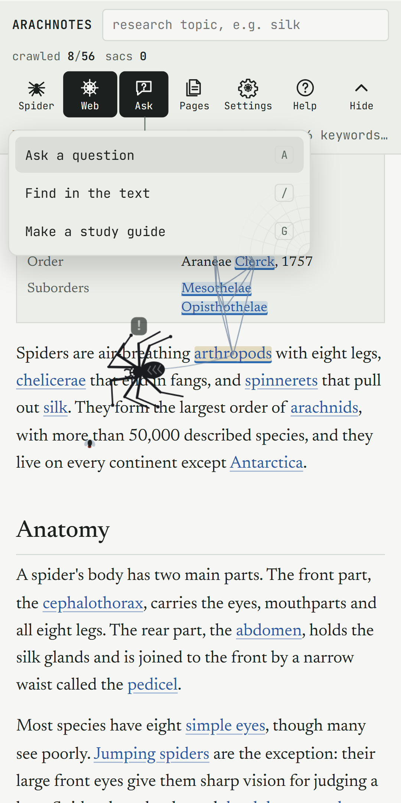
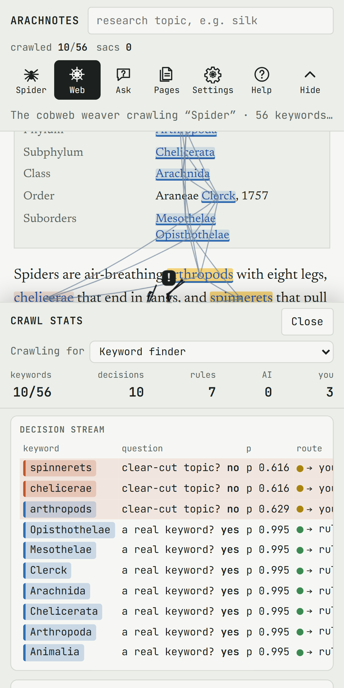
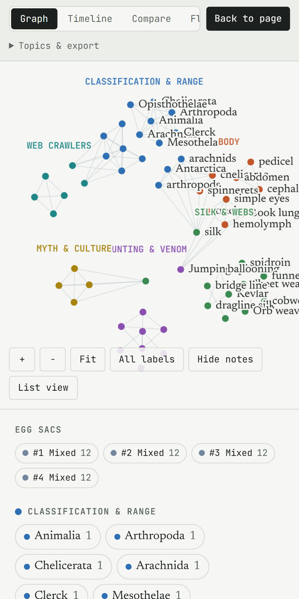
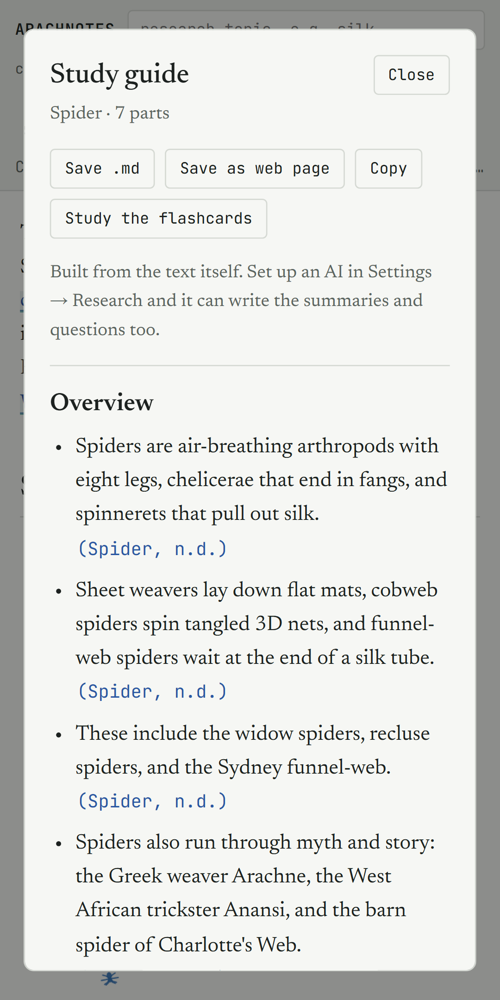
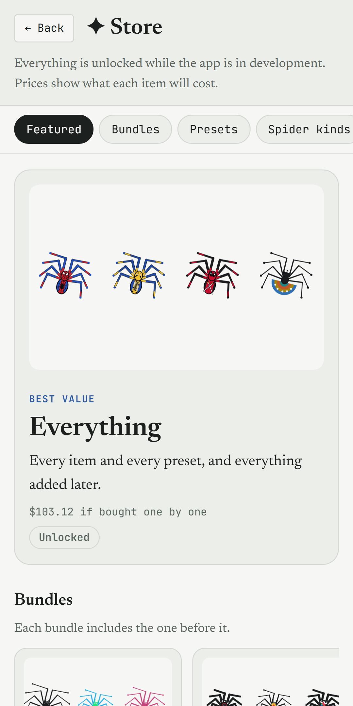
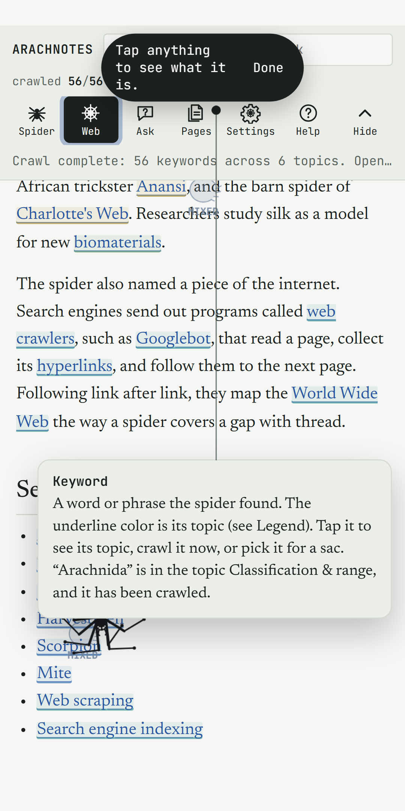

For Android and the web · by CAK3D_Creations
A spider that reads for you.
Give Arachnotes a web page, a PDF, a book or a photo of a page. A spider crawls it keyword by keyword, spins the keywords into topics, and builds study notes that cite where every idea came from.
What it does
Everything it finds, it ties to its source.
- Opens almost any text.Paste text, open a link, a PDF, an EPUB, a .txt or .md file, or a photo of a page. It can search the web for more pages on the same subject and crawl them together.
- Finds keywords and topics.The spider reads each keyword in context and decides which topic it belongs to. The live stats show every decision and how sure it is.
- Makes study material.A study guide, flashcards with spaced repetition, a keyword web, a nest of topics, charts, a timeline and an outline you can save.
- Cites its sources.Numbered sources with page numbers, APA, MLA or Chicago style, a bibliography, and export to Zotero and BibTeX.
- Keeps the pictures.Pictures and videos from crawled pages are sorted into their topics with captions, credits and licenses, and cited too.
- Answers questions.Ask the text a question and get the passages that answer it. With your own AI key, it also writes a short cited answer.
- Reads code.Open a project or a GitHub link and it maps every function, class and variable as a web, then explains the code in plain words.
- Stays yours.No accounts, no ads, no tracking. What you crawl stays on your device, and works without the internet once it's open.
A look inside
Some images of the app






Installing the Android app
Three steps, about a minute.
1Download
On your phone, tap Download for Android above. The file is called Arachnotes-v…apk.
2Open it
Open the downloaded file. If Android asks, allow your browser to install unknown apps. That's only needed for this file.
3Start crawling
Open Arachnotes from your home screen and tap Try the sample, or open your own text.
Once Arachnotes is on Google Play, install it from there instead so it updates itself. The app also tells you when a new version is ready.
Help and feedback
Found a snag in the web?
Issues
Something not working? See whether someone has already reported it, add your vote, or post a new issue.
Open IssuesIdeas
Suggest a feature, a spider look or a theme, and vote for the ideas you want most. Popular ideas get built first.
Open IdeasPrivate help
For anything about your own purchases or data, use Settings → ? → Report an issue in the app. Only CAK3D_Creations can read those.